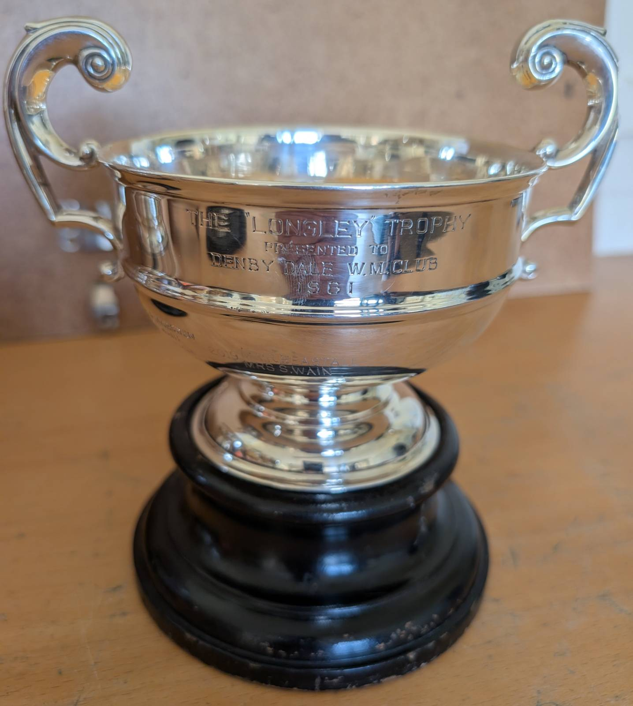
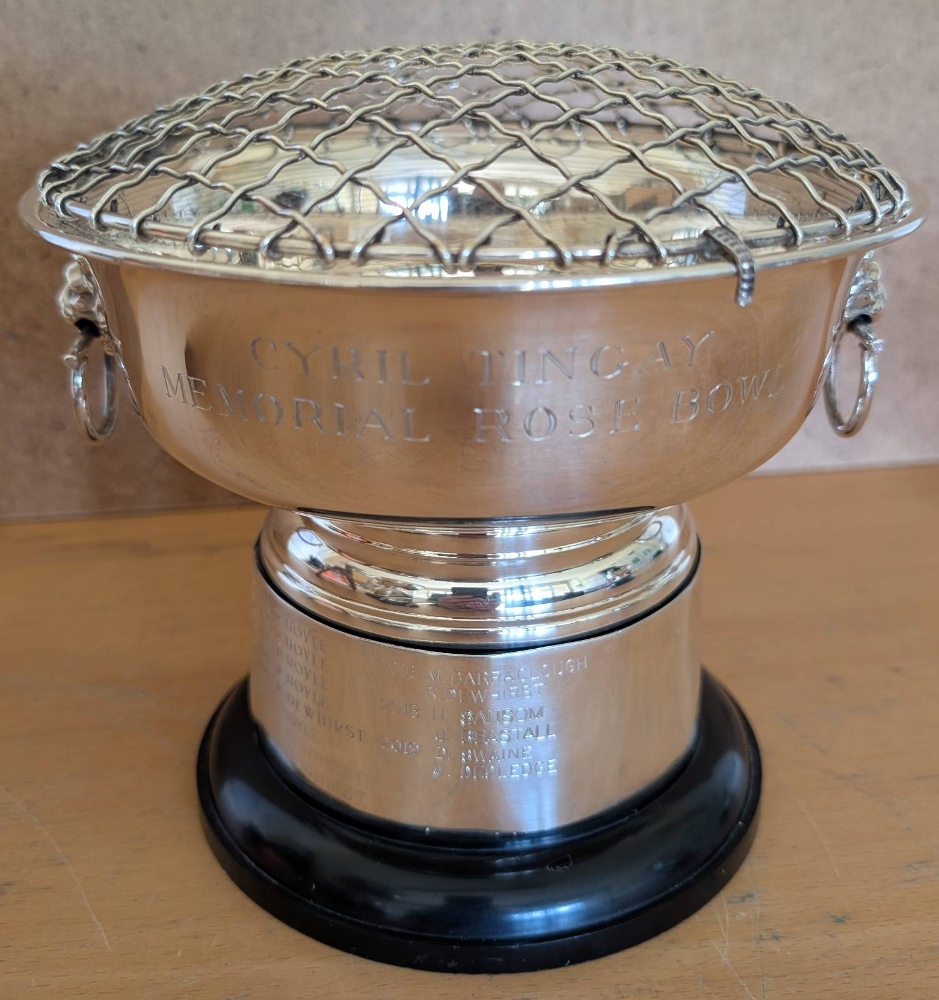
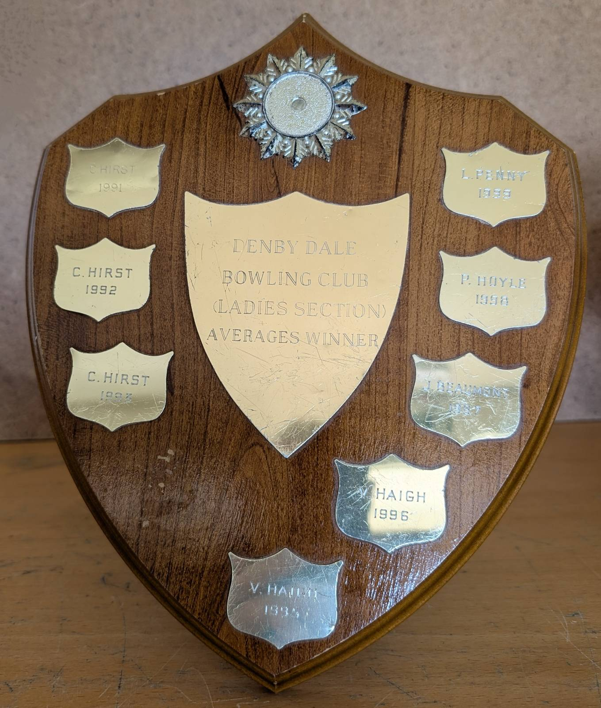
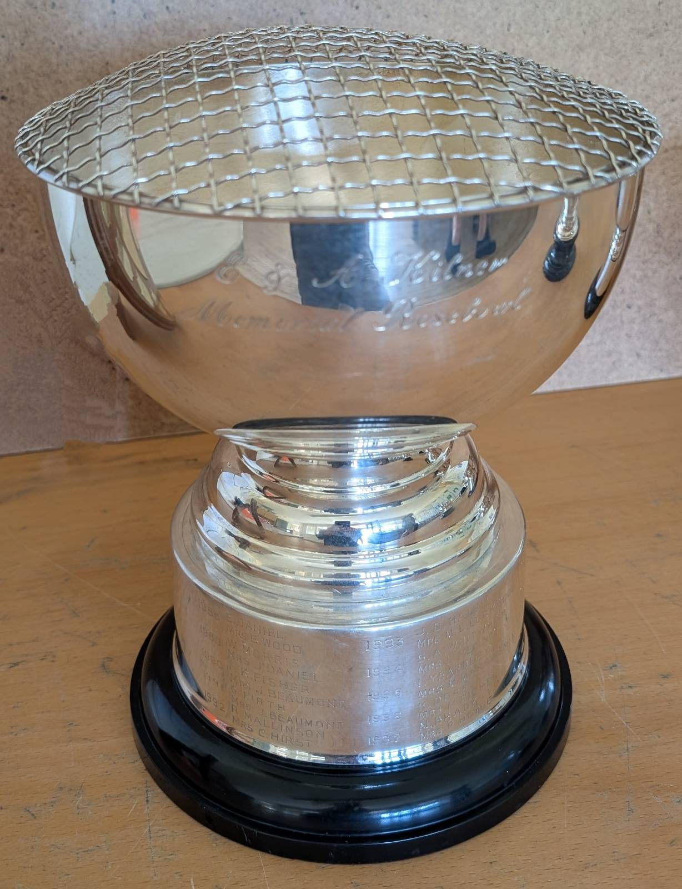

Denby Dale Bowling Club Trophy Cabinet
The Longley Trophy
Presented to the Denby Dale Working Men's Club in 1961 and has been awarded both for Ladies Pairs and Mixed Pairs

| Year | Winners |
|---|---|
| 1995 | J R Hirst
Mrs J Beaumont |
| 1996 | P Hoyle
Mrs M Marsden |
| 1997 | E C Mellor
Mrs L Penny |
| 1998 | M J Brady
Mrs J Beaumont |
| 1999 | M J Peace
Mrs P Hoyle |
| 2000 | P Hoyle
Mrs M Marsden |
| 2001 | M J Peace
Mrs P Hoyle |
| 2002 | P Hoyle
Mrs M Marsden |
| 2003 | R Horne
Mrs V Heywood |
| 2004 | M J Peace
Mrs P Hoyle |
| 2005 | P Hoyle
Mrs M Marsden |
| 2006 | S Whitwham
Mrs L Penny |
| 2007 | M J Peace
Mrs P Hoyle |
| 2008 | M J Peace
Mrs P Hoyle |
| 2009 | Mr & Mrs L Holt |
| 2010 | Mr M Peace
Mrs P Hoyle |
| 2012 | Mrs P Marsden
Mrs S Wain |
| 2013 | Mrs P Hoyle
Mrs S Gaunt |
| 2019 | Mr R Beastall
Mrs S Wain |
Cyril Tingay Memorial Rosebowl
This trophy was awarded for Ladies Singles 1984 - 2015, then for Ladies Pairs 2016, 2018 and 2019.

| Year | Winner |
|---|---|
| 1984 | Miss J C Mitchell |
| 1985 | Mrs J Wood |
| 1986 | Mrs C Hirst |
| 1987 | Mrs H Hinchliffe |
| 1988 | Miss P Beever |
| 1989 | Mrs M Fisher |
| 1990 | Mrs J Wood |
| 1991 | Mrs M L Lockwood |
| 1992 | Mrs M L Lockwood |
| 1993 | Mrs J Beaumont |
| 1994 | Mrs V Haigh |
| 1995 | Mrs J Beaumont |
| 1996 | Mrs L Penny |
| 1997 | Mrs L Penny |
| 1998 | Mrs L Penny |
| 1999 | Mrs M Fisher |
| 2000 | Mrs P Hoyle |
| 2001 | Mrs P Hoyle |
| 2002 | Mrs P Hoyle |
| 2003 | Mrs L Penny |
| 2004 | Mrs M Marsden |
| 2005 | Mrs L Penny |
| 2006 | Mrs S Gaunt |
| 2007 | Mrs M Fisher |
| 2008 | Mrs P Hoyle |
| 2009 | Mrs P Hoyle |
| 2010 | Mrs P Hoyle |
| 2011 | Mrs P Hoyle |
| 2012 | Mrs R Dewhirst |
| 2013 | Mrs P Hoyle |
| 2014 | Mrs R Dewhirst |
| 2015 | Mrs R Dewhirst |
| 2016 | M Barraclough R Dewhirst |
| 2018 | H Sansom J Beastall |
| 2019 | D Swaine J Depledge |
Ladies Section Averages Shield

| Year | Winner |
|---|---|
| 2000 | P Hoyle |
| 2001 | P Hoyle |
| 2002 | L Penny |
| 2003 | L Penny |
| 2004 | J Hardy |
| 2005 | J Beaumont |
| 2006 | L Penny |
| 2007 | P Hoyle |
| 2008 | P Hoyle |
| 2009 | P Hoyle |
| 2010 | P Hoyle |
| 2011 | P Hoyle |
| 2012 | V Haywood |
| 2013 | R Dewhirst |
| 2014 | P Hoyle |
| 2015 | R Dewhirst |
| 2016 | S Burton |
| 2017 | S Wain |
| 2018 | J Maddrell |
E & A Kilner Memorial Rosebowl
Awarded for Mixed Pairs between 1988 and 2015.

| Year | Winner |
|---|---|
| 1988 | E Daniel Mrs E Wood |
| 1989 | W Morris Mrs J Daniel |
| 1990 | F K Fisher Mrs J Beaumont |
| 1991 | G Firth Mrs J Beaumont |
| 1992 | R Mallinson Mrs C Hirst |
| 1993 | J D Haigh Mrs M L Lockwood |
| 1994 | S A Whitwham Mrs L Penny |
| 1995 | I Yeardley Mrs M Marsden |
| 1996 | K Dore Mrs M Fisher |
| 1997 | M Brady Mrs P Hoyle |
| 1998 | M J Peace Mrs S Moffatt |
| 1999 | R Tyas Mrs M Marsden |
| 2000 | R Thomas Mrs P Hoyle |
| 2001 | R Walmsley Mrs L Penny |
| 2002 | R Turner Mrs M Marsden |
| 2003 | K Dore Mrs P Hoyle |
| 2004 | K Dore Miss J Hardy |
| 2005 | L Holt Mrs V Heywood |
| 2006 | P Hoyle Mrs P Hoyle |
| 2007 | M J Peace Mrs C Thomas |
| 2008 | L Holt Mrs C Mitchell |
| 2010 | M Peace Mrs P Wright |
| 2014 | Mr I Wright Mrs P Wright |
| 2015 | Mrs J Depledge Mr L Holt |